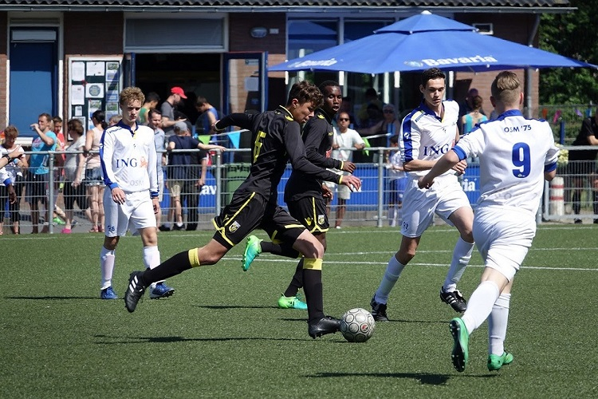
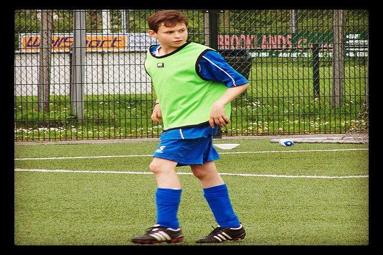
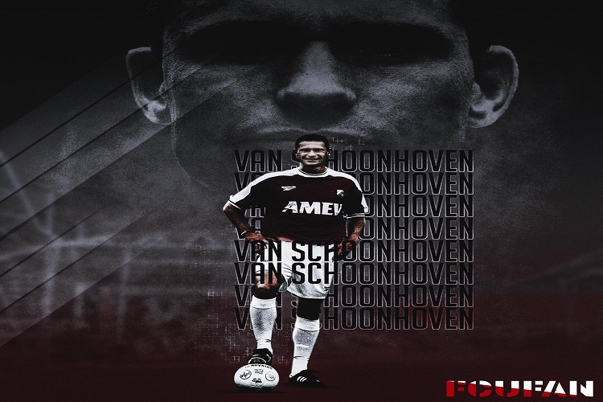
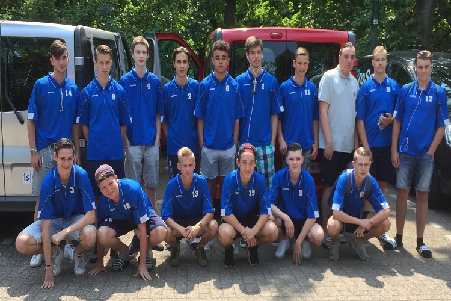

𝚅𝚘𝚎𝚝𝚋𝚊𝚕
Ik ben al vroeg begonnen met de sport, meteen nadat ik mijn zwemdiploma A had ging ik op voetbal. Zoals iedereen begon ik in de pupillen bij OSM '75. Daar had je trainer Beer. Iedereen op het voetbalcomplex wist wie hij was. We hadden ook nog bij Desto en Elenkwijk gekeken maar al mijn klasgenoten zaten bij OSM '75. Als snel kreeg ik de sport onder de knie, vooral omdat ik zo'n geweldige vader had. Hij heeft bij aardig wat clubs in de Eredivisie gespeeld, onder andere FC Utrecht, SC Cambuur en Ado Den Haag. Al snel had ik mijn vaste positie in het veld, verdediger. In het begin als verdediger was het een beetje overal, ik had altijd genoeg energie en conditie om overal te lopen in de achterhoede. Bij onze aardsrivaal V.V. Maarssen was mijn vader zijn laatste wedstrijd die hij kon kijken bij mij. Ik weet niet meer precies of we hadden gewonnen of verloren maar het was een vervelend moment. Toen ik in de E1 zat kwam mijn eerste grote wedstrijd tegen de F1 van Ajax, deze wedstrijd werd elk jaar gehouden bij OSM '75. We hadden wonderbaarlijk genoeg 2-1 van ze gewonnen. Toen ik nog jong was zei ik altijd sorry na een overtreding, ik was altijd veel te lief voor de tegenstander. Maar in de D2 veranderde dat, buitenspel werd een regel en we gingen op het grote veld. Nadat ik mijn tegenstander een keer goed had neergehaald werd het gewoonlijk en ging de lieve Bart weg, de verdediging was van mij niemand mocht er doorheen. Ik heb gelukkig altijd veel snelheid gehad dus kon de spitsten altijd goed bijhouden. We werden vaak kampioen en uiteindelijk hadden we als team hoofdklasse gehaald. De voetbal wedstrijden werden steeds spannender en de scores kleiner. Maar ik moest natuurlijk weer ongeluk hebben en mijn sleutelbeen breken ik had het verder niet door in de wedstrijd, ik zat dus in duel met een spits voor de bal richting het 16-metergebied te rennen. Mijn keeper kwam uit en in plaats van dat hij de bal greep knalde hij mij overeind en deed ik een halve salto en landde ik op mijn rug. Ik had aardig was last van mijn schouder maar had verder niet door dat er iets was gebroken. Ik stond dus op en geen weer verder spelen, uiteindelijk in rust vroeg ik aan iemand die aan de zijkant stond of er iets met mijn schouder aan de hand was, hij zei: "Nee, ik voel niks raars, niks aan de hand gewoon door spelen". Dus de bikkel die ik ben gaat gewoon lekker doorspelen, het eerste duel dat ik aan ga voel ik dat hele bot overelkaar schuiven dus ik ging maar wisselen. Na de wedstrijd naar het ziekenhuis gegaan om foto's te maken en natuurlijk hij was gebroken. Een seizoen verder ik probeer een schot op doel te blokkeren, dat lukte ook alleen mijn enkel klapte dubbel, waterzak erbij even een kleine speech en weer door spelen. Vervolgens maak ik een scherpe bocht en ik voel mijn enkelband gewoon scheuren. Ik meteen zitten scheidsrechter fluit de wedstrijd stil ik word naar de kant gebracht en er zit een complete tennisbal op mijn enkel. Uiteindelijk zo mijn basispositie kwijt geraakt, naar een ander team gegaan het seizoen afgemaakt en gestopt met voetbal.
   